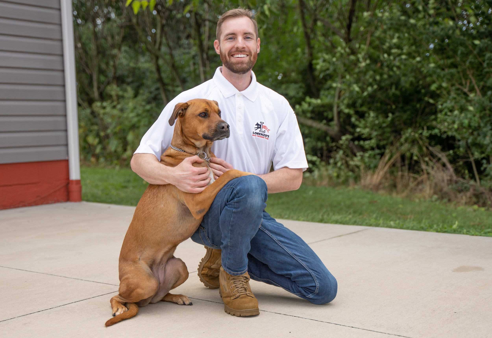

Tristan Gray
Durham, NH
Tristan became inspired after seeing his own dog Sophie's progress and is committed to helping as many dogs as possible.

Durham, NH
Tristan became inspired after seeing his own dog Sophie's progress and is committed to helping as many dogs as possible.
Tristan Gray Durham, New Hampshire Tristan Gray grew up in Montana and currently resides in Durham, New Hampshire. In his quest to have his dog, Sophie, professionally trained, he found Lorenzo’s Dog Training Team. He was amazed at Sophie’s progress, so much so that the thought of becoming a dog trainer himself was becoming clearer a clearer.
He shadowed Sophie’s trainer and was amazed at the positive response he would get from his clients. Despite his family’s hesitance and hopes that he’d get a “real job”, Tristan learned about the training program at LDTT at an event, and he knew it was the chance of a lifetime, so he pushed forward and dove, headfirst, into becoming a dog trainer. When asked about his goals, Tristan responded, “I want to help as many dogs as I can.
It is the most important thing to me as a dog trainer. It saddens me, the number of dogs currently in shelters. I want to volunteer and help train dogs that would otherwise not be adopted.
They are man’s best friend for a reason. They just need a little guidance, and they can live their best life with their owner.” In his spare time, Tristan enjoys renovating and landscaping his home. He likes working on his sports car and, of course, driving it.
Watching tv, playing video games, going on hikes and being outside, fly fishing, operating his drone, and using his degree in electronics are just a few of the things he likes to do.
Send your request directly to Lorenzo's office with Tristan Gray already assigned as the source trainer.